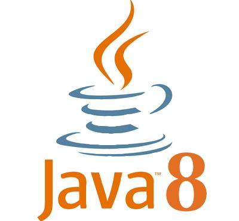
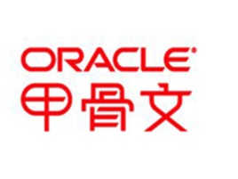
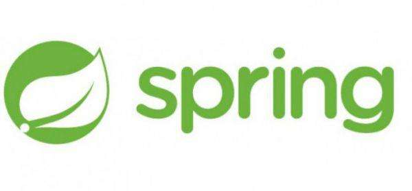
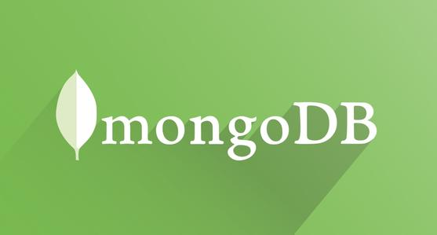
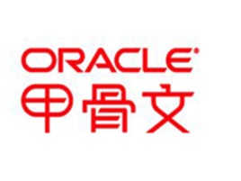
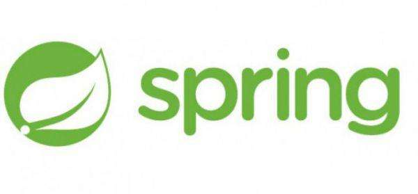
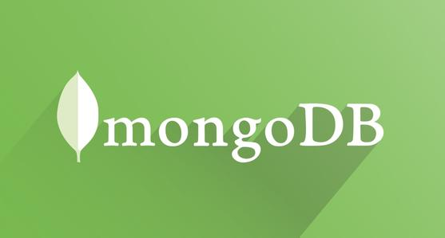

-
- Basic info. 基本信息
- 个人信息: 常志强 / 男
- 学校信息: 吉林大学
- CSDN博客: blog.csdn.net/crpxnmmafq
-
- Skill. 技能清单
-
总览

 





-
简介
1. 深度认知Spring(IOC、AOP)运行原理,有JVM调优工作经验
2. 熟练掌握Spring系列技术栈，对尤其擅长进行SpringBoot开发
3. 熟练掌握MySql、MariaDB等关系型数据库调优措施
4. 熟练掌握Redis、MogoDB等非关系数据配置使用
5. 熟练掌握Gradle、Maven等项目构建工具
6. 熟练掌握git、svn等版本控制工具
7. 熟悉ES全文索引使用
8. 了解nginx服务器配置
9. 了解Linux 系统以及云计算平台搭建
-
- Information. 我的信息
项目经验
-
国安创客
开发环境：STS + SpringBoot + Maven
项目上线地址：https://www.gack.citic/
项目描述：该项目为中信集团子公司打造为中小微企业提供在企业服务的类服务网站
责任简介：与设计整体逻辑架构，主要负责用户登录，注册，共享数据，第三方登录，订单以及秒杀服务逻辑设计，第三方数据查询代码实现
技术要点：
- ① 登录模块:为保证用户信息可以在不同业务逻辑共享，使用SpringBoot+Redis 的共享Session确保和多端登录获取的sessionId一致
- ② 检索模块:负责技术迭代，将原来按照关键字查询更改为elasticsearch，依赖elasticsearch大幅度提高检索关键字速度
- ③ 微信互联：通过微信官网demo，通过获取在OAuth2.0认证过程中，向指定网址传入对应的appid来达到快捷登录的效果
- ④ 第三方数据查询:通过接入专利汇以及标库网相应api，来获取对应专利查询商标查询接口，后台做缓存措施，保证用查询体验
- ⑤ 秒杀接口:为保证秒杀接口承载大量并发，将秒杀接口单独部署服务器，并将订单号提前存储至redis数据库以保证订单号唯一，通过redis的watch来实现乐观锁，保证秒杀数据准确
-
国安支付
开发环境：Eclipse + SpringBoot + Maven
项目描述：公司技术升级，有原来PHP的所实现的业务逻辑无法满足秒杀接口(使用排队措施暂时解决)，涉及支付方式支付宝(h5,二维码，APP)，微信（h5-微信公众号，h5-第三方浏览器，二维码，APP），快钱支付（PC,APP）
责任简介：主要负责微信支付全部业务逻辑，业务逻辑代码优化，多线程调优
技术要点：
- ① 接入微信h5-第三方浏览器需要注意将调用接口ip存入位置相关配置，如用户从wifi调起接口由于网络原因切换到移动网络支付将无法成功支付。需要将返回地址在服务器访问，展示给用户，需要使用域名访问而非ip等
- ② 微信内支付，为保证安全性，微信要求必须是80端口，而且用户重复提交需要5分钟内只能获取一次open_id
- ③ 由于微信内部保证支付安全，需要保证前端和后台部署到同一服务器的同一项目，原vue项目无法使用，使用template模板实现前台页面展示，并能成功掉起后台接口
- ④ 每天有进千条待对账订单，使用php单线程方式对账需要10分钟左右，经过优化使用线程池方式，同时执行20条，目前对账约1分钟。
-
博客管理系统
开发环境：Eclipse + SpringBoot + Gradle
项目已开源github地址：https://github.com/changzhiqiang1/demo_blog
项目描述：整个管理系统包含三个用户分类，未登录用户可以查看博客，根据关键字查询文章，普通账户可以留言，点赞博客以及未登录用户功能，管理员可以修改，删除用户信息
责任简介：前端采用网络已有成型demo，后端代码全部自己独立完成
技术要点：
- ① 搜索模块:博客检索采用ElasticSearch + SpringData，使海量数据也能快速检索
- ② 数据展示:使用Tmeleaf原型即模板，在不改变页面布局同时展示数据
- ③ 权限管理:使用SpringSecurity提供声明式事物管理，记住密码等操作
- ④ 数据管理:使用mysql + MongoDB 组合存储数据，将图片等存储于MongoDB服务器
- ⑤ 编译器:使用MarkDown插件书写博客，后台将MarkDown映射为HTML供展示使用
- ⑥ 用户安全:用户密码采用BCrytb加密，即使密码相同产生的密文依旧不同
-
家教管理系统
开发环境：MyEclipse2017+Oracle+JDK8
项目描述：该项目致力于为教师提供在线审核学生作业，为作业评分以及检查学生是否及时完成作业，提交作业，学生提供过账号密码登录，选择课程，根据教师发布任务提交作业，在线查看是否批阅，是否提交等
技术要点：
- ① 数据库模块：数据方面共有7个表，主外键关联较强，权限管理复杂
- ② 展示界面模块：使用第三方美化包美化Java基础的GUI
- ③ 数据通信模块: 使用Socket 套接字外界java多线程封装，服务器以及客户端均在本地虚拟
- ④ 联网信息模块：使用JSON获取新浪网天气信息 根据设置城市编号 联网自动获取天气信息
- ⑤ 技术模块: 使用JAVA8 Lambda表达式进行GUI监听事件书写
-
祥云玩具在线商城
开发环境：Eclipse+Tomcat7.0
项目描述：整个系统包含二个子系统，分别是面向前端客户的商品交易系统，实现客户购买商品的需求；面向公司内部员工的办公系统，支付系统对接和邮件系统，实现业务订单处理及对站内各种信息进行管理的需求
责任简介：参与项目功能划分和设计的讨论，主要负责支付接口网络调试，数据存储，报表生成以及数据库文档设计等
技术要点：
- ① 接入支付宝在线支付，网关发起支付请求，支付请求中包含已加密的商户的ID、商户的订单号、支付金额，请求发起前需要使用请求参数和商户的密钥采用MD5技术生成用户身份签名，并把用户身份签名作为请求参数发送给支付网关
- ② 发生付款时，封装订单信息,发送支付请求，用户扫描二维码后,解析从来自服务器响应的json数据
- ③ 发生退款时，将订单号和金额封装发起啊退款请求，解析从来自服务器响应的json数据
- ④ 解析json数据后，将结果同步展示给客户端，异步传送至服务器，服务器存储订单信息至服务器
- ⑤ 将数据库数据统计，并使用jfreechar生成图表展示
企业项目个人项目项目实战